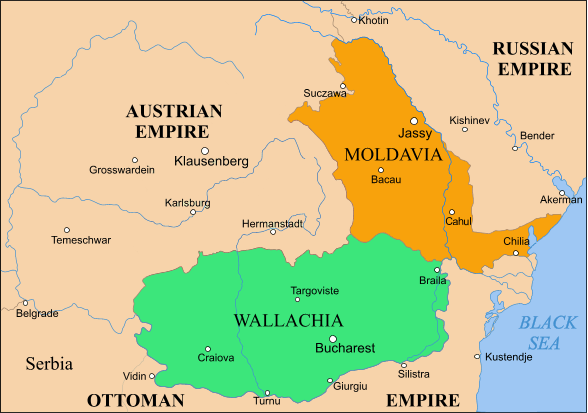
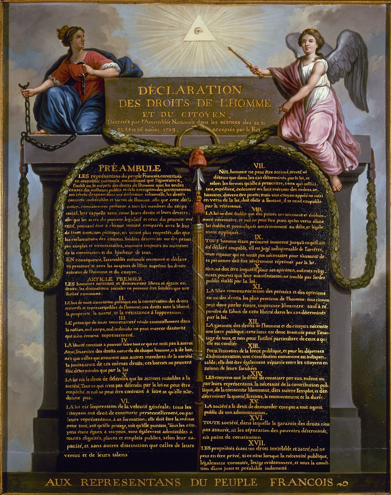
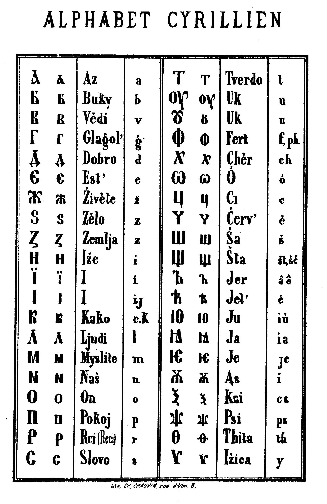
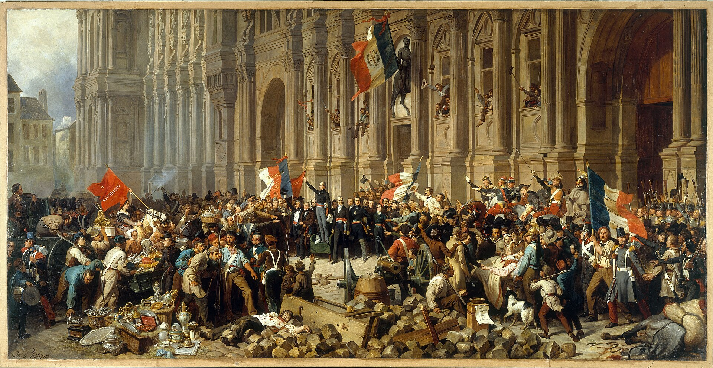
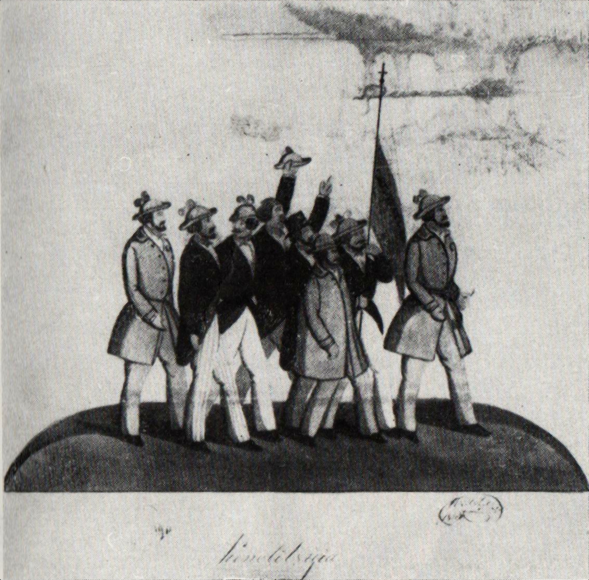
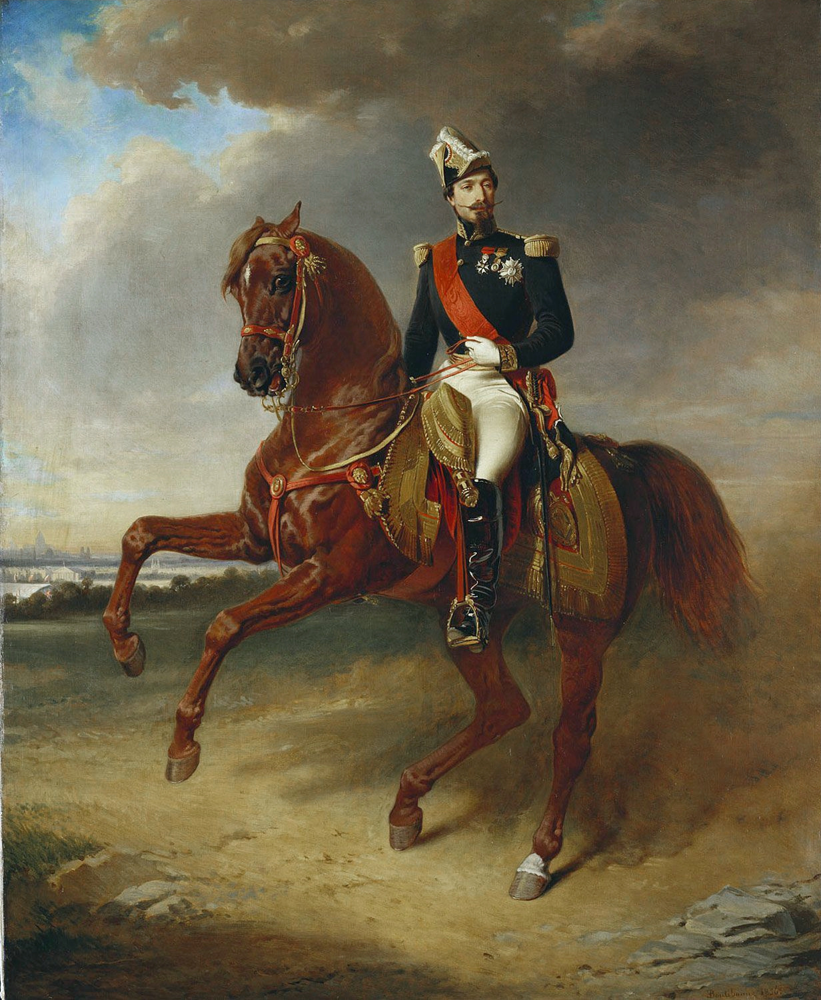
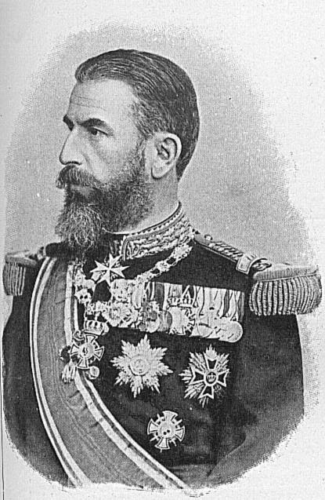

Before the bridge to Paris
A country-to-be under three shadows.
Before there was a united Romania, Moldavia and Wallachia sat between the Ottoman Empire, the Habsburg world and Russian expansion. Paris was distant. That was precisely the point: it offered a Western bridge, not another nearby master.
Avant qu’il n’y ait une Roumanie unie, la Moldavie et la Valachie se trouvaient entre l’Empire ottoman, le monde habsbourgeois et l’expansion russe. Paris était loin — et c’était justement l’essentiel : un pont occidental, non un maître voisin.

The question
Why did a Romanian elite look to Paris?
Pourquoi une élite roumaine a-t-elle regardé vers Paris ?
Not because it wished to become French. It needed a way to become Romanian without becoming a province of somebody else’s empire.
Non pour devenir française, mais pour devenir roumaine sans rester une province de l’empire d’autrui.
France offered three things at once: a Latin relative; a political language of citizen, nation and law; and a great power willing, at crucial moments, to make a Romanian future legible in Europe.
La France offrait à la fois une parenté latine, une langue politique du citoyen, de la nation et du droit, et une grande puissance capable de rendre l’avenir roumain intelligible à l’Europe.
This is the migration of an idea: revolution → education → language → law → state.La migration d’une idée : révolution → éducation → langue → droit → État.
The idea is born, argued, codified, and projected.
The idea is learned, translated, contested, and made useful.
Read each pair across. The line between them is the point.
The invention of a portable political language
France
The Revolution invents the modern nation-state.
La Révolution invente l’État-nation moderne.

1789 changes the grammar of politics. A subject becomes a citizen. A kingdom becomes a nation. France joins the sovereign people to institutions—common law, administration, public education, army and territory. In 1804, the Code civil gives Europe a disciplined language for equality before the law, property, contract and civil life.
1789 change la grammaire politique. Le sujet devient citoyen. Le royaume devient nation. La France lie le peuple souverain à des institutions — droit commun, administration, instruction publique, armée, territoire. En 1804, le Code civil donne à l’Europe une langue rigoureuse de l’égalité devant la loi, de la propriété, du contrat et de la vie civile.
portable
Romania
Before the state, there is a claim.
Moldavia and Wallachia sit between Ottoman suzerainty and Russian pressure. Romanian is the language of a people, not yet the unquestioned language of power. The Transylvanian School makes Latin descent an argument for cultural emancipation.
La Moldavie et la Valachie vivent entre suzeraineté ottomane et pression russe. Le roumain est la langue d’un peuple, pas encore la langue incontestée du pouvoir. L’École transylvaine fait de la filiation latine un argument d’émancipation culturelle.
« La “petite Rome” d’Orient et la régénération roumaine. »
“The ‘little Rome’ of the East and Romanian regeneration.”
The claim matters because it gives a dispersed population a Western family of reference: Rome, France, Italy, law, public education, citizenship.
Cette affirmation compte parce qu’elle donne à une population dispersée une famille de référence occidentale : Rome, la France, l’Italie, le droit, l’instruction publique, la citoyenneté.
The most intimate frontier
French did not replace Romanian.
It helped remake what Romanian could say.

Latin script was a choice of alignment. French was the prestige language of the schools, salons, press, law and diplomatic world that Romanian elites wanted to enter. It was the principal conduit—alongside Latin and Italian—through which a modern, Romance public vocabulary was made available.
L’alphabet latin fut un choix d’orientation. Le français était la langue de prestige des écoles, des salons, de la presse, du droit et du monde diplomatique que les élites roumaines voulaient rejoindre. Avec le latin et l’italien, il fut le principal vecteur d’un vocabulaire public moderne et roman.
« Le français est perçu comme la langue des “cousins latins”. »
“French is perceived as the language of the ‘Latin cousins.’”
Nearly 30,000 Romanian lexemes with a French etymon are catalogued in the Dicționarul de împrumuturi lexicale din limba franceză. That is a dictionary inventory, not a count of daily speech—but it reveals the scale of the encounter.
Près de 30 000 lexèmes roumains d’étymon français sont recensés dans le Dicționarul de împrumuturi lexicale din limba franceză. Ce chiffre est un inventaire lexicographique, non une mesure de la langue quotidienne — mais il donne l’échelle de la rencontre.
How ideas moved: people, books, lectures, a revolution
Paris
The capital becomes a school.

Paris is not merely a destination. It is the nineteenth century’s amplifier: universities, publishers, newspapers, salons, political societies and a revolution watched in real time.
Paris n’est pas une simple destination. C’est l’amplificateur du XIXe siècle : universités, éditeurs, journaux, salons, sociétés politiques et une révolution vécue au présent.
the continent
Romanian elites in Paris
They go west to learn how a nation is made.

« La jeunesse roumaine, formée à Paris, à Vienne, à Berlin, découvre les idées libérales et nationales. »
“Romanian youth, trained in Paris, Vienna and Berlin, discovers liberal and national ideas.”
Ion and Dumitru Brătianu attend the lectures of Michelet, Quinet and Guizot. Around them, Bălcescu, Rosetti and others find something decisive: a transnational elite network and a practical vocabulary for political action.
Ion et Dumitru Brătianu suivent les cours de Michelet, Quinet et Guizot. Autour d’eux, Bălcescu, Rosetti et d’autres trouvent l’essentiel : un réseau d’élites transnational et un vocabulaire pratique de l’action politique.
Why Paris? Because it made a young Romanian elite visible to itself—and gave it a Europe larger than the three empires surrounding home.Pourquoi Paris ? Parce que la ville rend une jeune élite roumaine visible à elle-même — et lui donne une Europe plus vaste que les trois empires qui l’entourent.
Revolution becomes a Romanian programme
France
February sends a shock through Europe.
The fall of the July Monarchy makes the French Revolution present tense again. It places a question before every people ruled by dynasty or empire: can political legitimacy be remade?
La chute de la monarchie de Juillet remet la Révolution française au présent. Elle pose à chaque peuple soumis à une dynastie ou à un empire une question : la légitimité politique peut-elle être refaite ?
citoyen · nation · constitution · droits
Islaz
Wallachia
A French repertoire, translated to a Romanian emergency.
« Le programme est directement inspiré du libéralisme français, avec ses accents jacobins. »
“The programme is directly inspired by French liberalism, with its Jacobin accents.”
At Islaz, the borrowed words turn into local demands: political equality, responsible government, emancipation, land reform and union. The point is not to copy Paris. The point is to make a people capable of governing itself.
À Islaz, les mots empruntés deviennent des exigences locales : égalité politique, gouvernement responsable, émancipation, réforme agraire et union. Il ne s’agit pas de copier Paris, mais de rendre un peuple capable de se gouverner.
The pressure from the east
Why did these ideas feel urgent?
A French-speaking, law-making Romania was not a salon preference. It was a way to create distance from the territorial appetite and autocratic political model of the Russian Empire—and later the USSR.
Une Roumanie francophone et capable de faire sa loi n’était pas une préférence de salon. C’était une manière de prendre ses distances avec l’appétit territorial et le modèle politique autocratique de l’Empire russe — puis de l’URSS.
Bessarabia is annexed.
Russia takes the eastern half of Moldavia by treaty with the Ottoman Empire. The people whose land is divided do not decide.
La Russie prend la moitié orientale de la Moldavie par traité avec l’Empire ottoman. Les habitants dont la terre est divisée ne décident pas.
Protector becomes pressure.
Russian influence hardens around the principalities; administration modernises, but under an authoritarian shadow rather than national consent.
L’influence russe se durcit autour des principautés ; l’administration se modernise, mais sous une ombre autoritaire plutôt que par consentement national.
The revolution is crushed.
Russian pressure, combined with Ottoman intervention, ends the Wallachian revolution. The students’ political lesson has an immediate imperial answer.
La pression russe, jointe à l’intervention ottomane, met fin à la révolution valaque. La leçon politique des étudiants reçoit aussitôt une réponse impériale.
An ally takes territory.
After fighting beside Russia for independence, Romania is compelled to surrender southern Bessarabia to its ally.
Après avoir combattu aux côtés de la Russie pour son indépendance, la Roumanie est contrainte de céder la Bessarabie méridionale à son allié.
Annexation becomes remaking.
The USSR takes Bessarabia and Northern Bukovina. Arrests, deportations, resettlement and Russification follow the new border.
L’URSS prend la Bessarabie et le nord de la Bucovine. Arrestations, déportations, déplacements de population et russification suivent la nouvelle frontière.
The Romanian fear was not that Russia was “foreign.”
It was that an empire could make belonging, law and memory answer to Moscow.La crainte roumaine n’était pas que la Russie soit « étrangère », mais qu’un empire puisse faire répondre à Moscou l’appartenance, la loi et la mémoire.
The diplomatic hinge: Napoleon III, union, law
France under Napoleon III
Paris turns sympathy into leverage.

France’s victory in the Crimean War breaks Russia’s exclusive protectorate over the principalities. Napoleon III backs the union of the two principalities: a Latin nationality on Europe’s eastern flank is both a cause and a strategic fact.
La victoire française dans la guerre de Crimée met fin au protectorat exclusif de la Russie sur les principautés. Napoléon III soutient leur union : une nationalité latine sur le flanc oriental de l’Europe est à la fois une cause et un fait stratégique.
a door
The Romanian answer
Union is made. Then it must be made real.
In 1859, Moldavia and Wallachia elect the same prince, Alexandru Ioan Cuza. In 1864, the state builds the legal machinery it needs to survive.
En 1859, la Moldavie et la Valachie élisent le même prince, Alexandru Ioan Cuza. En 1864, l’État se donne l’appareil juridique dont il a besoin pour durer.
« Le code civil roumain est une traduction presque littérale du Code Napoléon, adaptée aux conditions locales. »
“The Romanian Civil Code is an almost literal translation of the Napoleonic Code, adapted to local conditions.”
Why a French code? It turns an aspiration into a shared civic order: equal legal standing, civil marriage, property, contract and a public state stronger than personal patronage.
Pourquoi un code français ? Il transforme une aspiration en ordre civique partagé : égalité devant la loi, mariage civil, propriété, contrat et État public plus fort que les patronages personnels.
A German king, a French-speaking country, a European capital
French culture
A civilisation to enter, not merely admire.
French remains the language of educated conversation, study, literature and diplomacy. Paris offers forms as much as words: boulevard, café, university, public school, civil service, capital city.
Le français demeure la langue de la conversation éduquée, des études, de la littérature et de la diplomatie. Paris offre autant des formes que des mots : boulevard, café, université, école publique, administration, capitale.
« Bucarest devient “la petite Paris”. »
“Bucharest becomes ‘Little Paris.’”
a public face
Bucharest
A Latin nation chooses a German king.

Bucharest’s boulevards, civic buildings and Belle Époque façades consciously signal French urban prestige. “Little Paris” is not a nickname for imitation; it is a city announcing that public life, taste and ambition belong together.
Les boulevards, les édifices civiques et les façades Belle Époque de Bucarest affichent consciemment le prestige urbain français. « Le Petit Paris » n’est pas un surnom d’imitation : c’est une ville qui affirme que vie publique, goût et ambition vont ensemble.
« Carol I est un roi allemand dans un pays latin. »
“Carol I is a German king in a Latin country.”
There is no contradiction to hide. French culture gives the country its preferred horizon; a German dynasty gives it continuity and diplomatic weight. Romanian independence is built by combining Europe’s strengths.
Il n’y a aucune contradiction à cacher. La culture française donne au pays son horizon préféré ; une dynastie allemande lui donne continuité et poids diplomatique. L’indépendance roumaine se construit en combinant les forces de l’Europe.
A European crossroads
Many languages. One political home.
Romania remains a meeting place: Latin-speaking, shaped by French aspiration, with Hungarian, German, Turkish, Russian and other inheritances in its cities and regions. This is not a dilution of identity. It is identity made capable of holding a continent.
La Roumanie reste un lieu de rencontre : latine, façonnée par l’aspiration française, avec des héritages hongrois, allemand, turc, russe et d’autres encore dans ses villes et ses régions. Ce n’est pas une dilution de l’identité, mais une identité capable de contenir un continent.
Languages that remain open
- românăthe common civic language
- magyarmother tongue of 6.3% of census respondents who declared one
- Deutsch · Türkçe · русскийhistoric communities and living cultural traces
- English · français · Deutschschool languages: routes out to Europe, not exits from Romania
In 2024, 100% of Romanian upper-secondary general-education pupils studied English, 80% French and 17% German. These are study rates, not fluency rates.

The German thread
Europe did not arrive from one direction.
Carol I’s Hohenzollern dynasty gave the young state continuity; Sibiu/Hermannstadt and Sighișoara preserve the urban inheritance of Transylvanian Saxons. More recently, a Transylvanian Saxon, Klaus Iohannis, served as Romania’s president from 2014 to 2025.
La dynastie Hohenzollern de Carol I a donné de la continuité au jeune État ; Sibiu/Hermannstadt et Sighișoara gardent l’héritage urbain des Saxons de Transylvanie. Plus récemment, Klaus Iohannis, Saxon de Transylvanie, a été président de la Roumanie de 2014 à 2025.
A melting pot needs a centre. Romania’s centre is its own language, its civic state, and its European choice.Un creuset a besoin d’un centre. Le centre de la Roumanie, c’est sa langue, son État civique et son choix européen.